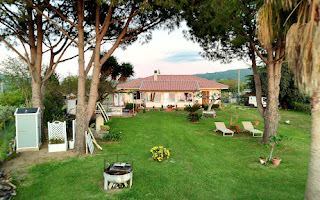

Cipolla rossa di Tropea: come gustarla e ricette

La cipolla rossa di Tropea è uno dei simboli della Calabria: dolce, croccante, di un colore viola acceso che si riconosce subito sui banchi del mercato. Chi passa qualche giorno sulla Costa degli Dei la ritrova ovunque, dalle insalate alle marmellate. Ecco come gustarla al meglio.
Perché è così speciale
Rispetto alle cipolle comuni ha un sapore delicato e poco pungente, tanto che molti la mangiano anche cruda. Il segreto è nel clima mite e nei terreni della costa tra Tropea e Capo Vaticano. Per questo è diventata famosa in tutta Italia e all'estero.
L'insalata tropeana
È il modo più semplice e più amato per assaggiarla. Servono:
- cipolla rossa di Tropea tagliata sottile;
- pomodori freschi;
- olive;
- origano e olio extravergine d'oliva;
- un pizzico di sale.
Si mescola tutto e si lascia riposare qualche minuto. Con una fetta di pane casereccio diventa un pranzo perfetto nelle giornate d'estate.
La pasta con la cipolla
Anche cotta la cipolla rossa dà il meglio di sé. Si affetta finemente e si lascia appassire a fuoco basso con olio d'oliva, finché diventa morbida e quasi dolce. Si può aggiungere qualche pomodorino oppure lasciarla protagonista: poi si condisce la pasta, magari con un filo d'olio a crudo.
Agrodolce e marmellata
Nelle botteghe del centro di Tropea la trovi anche in agrodolce o come marmellata, ottima con i formaggi stagionati. È un'idea regalo semplice e gustosa da portare a casa.
Dove assaggiarla
Quasi tutti i ristoranti del centro la propongono in qualche forma. Se vuoi un'esperienza più autentica, prova una giornata in campagna o una cena di cucina contadina: le trovi tra le nostre esperienze ed escursioni. E per scoprire il resto del paese, leggi la nostra guida su cosa vedere a Tropea.
Un ultimo consiglio: assaggia la cipolla rossa di Tropea direttamente sul posto. Fresca, appena raccolta, ha un sapore che a casa è difficile ritrovare. E se cerchi un alloggio per la tua vacanza, guarda le nostre case vacanze.